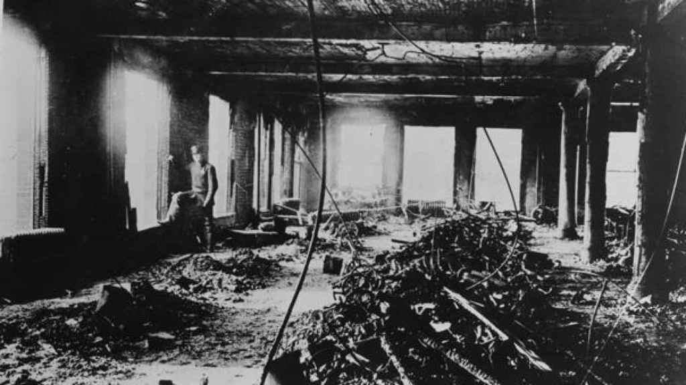

El simbólico lazo morado feminista tiene su origen a principios del siglo XX, relación con la nobleza inglesa y fue adoptado en la década de los 70. l lazo morado tiene su origen a principios del siglo XX, ya que fue el color elegido por las sufragistas inglesas junto al blanco y al verde en 1908 para reivindicar sus acciones. El color estaba inspirado en la nobleza inglesa. El movimiento de mujeres inglesas reclamó insistentemente el reconocimiento al sufragio femenino con acciones de protesta que fueron en aumento. Finalmente, el derecho a voto fue reconocido en 1917, aunque solo para las mujeres mayores de 30 años.
No sería hasta la década de los 60, con la segunda ola feminista, cuando las mujeres socialistas lo volvieran a adoptar como símbolo para reclamar la igualdad entre mujeres y hombres. Las sufragistas norteamericanas también lo adoptaron y lo portaron durante la manifestación de 1978 a favor de la Enmienda por la Igualdad de Derechos.
Es, por ello, que, desde entonces, el movimiento feminista utiliza el lazo morado como símbolo de apoyo a su lucha. También se utiliza el día 25 de noviembre, Día Mundial contra la Violencia de Género.
Existe otra teoría respecto al origen del lazo morado como símbolo de apoyo a las mujeres, pero entra dentro de la categoría de leyenda. En 1908, un incendio en la fábrica textil Cotton de Nueva York produjo la muerte de 129 mujeres trabajadoras que se habían declarado en huelga y murieron atrapadas. El incendio fue provocado por el propio dueño. La leyenda sostiene que el color del humo que salía del incendio era morado ya que las telas con las que estaban trabajando en la fábrica eran moradas, por lo que se habría adoptado ese color en el lazo en homenaje a las mujeres fallecidas. Aunque ese acto pentenezca al 8M (día intenacional de la mujer), también aporta en el significado del color morado en el 25N.
 Pulsa aquí para volver al índice